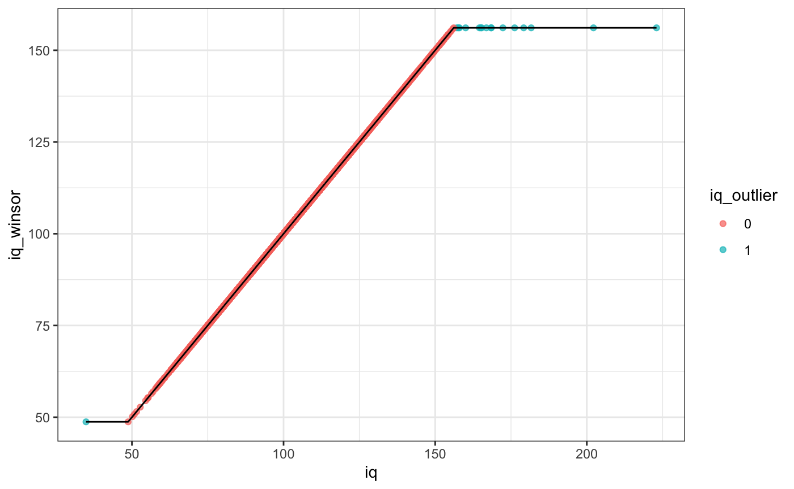

vignettes/scipub_vignette.Rmd
scipub_vignette.RmdThe scipub package contains functions for summarizing data for scientific publication. This includes making a “Table 1” to summarize demographics across groups, correlation tables with significance indicated by stars, and extracting formatted statistical summarizes from simple tests for in-text notation. The package also includes functions for Winsorizing data based on a Z-statistic cutoff.
The sample dataset of demographic and clinical data from 5,000 children is used for examples.
We’ll start by loading scipub:
library(scipub)
apastat
The apastat function summarizes simple statistical tests to include in the text of an article, typically in a parenthetical. This is built for t-tests, correlations, ANOVA, and regression. Regressions can be summarized by their overall model fit or the parameter estimates for one predictor variable. Effect sizes are calculated where possible (default: es=TRUE). For example:
There is a significant positive correlation between age and height. 95% confidence intervals are requested.
apastat(stats::cor.test(psydat$Age, psydat$Height), ci = TRUE) #> r=.41, t(4991)=32.06, 95% CI=[.39,.44], p<.001
There is no significant sex difference in height in the sample.
apastat(stats::t.test(Height ~ Sex, data = psydat)) #> t(4855.74)=0.83, p=.41, d=0.02 t(4855.74)=0.83, p=.41
A linear regression model predicting height was highly significant, with the predictors (age and sex) accounting for about 17% of the variance in height.
apastat(stats::lm(data = psydat, Height ~ Age + Sex)) #> N=4991, F(2,4988)=517.49, R2=.17, adj. R2=.17, p<.001
In this linear regression model, age was a highly significant predictor of height, controlling for sex.
apastat(stats::lm(data = psydat, Height ~ Age + Sex), var = "Age") #> N=4991, b=0.18, t(4988)=32.16, p<.001 N=4991, b=0.18, t(4988)=32.16, p<.001
correltable
The correltable function creates a summary correlation table with asterisks to indicate significance. Variables can be renamed as part of the function call. The full matrix or upper/lower triangle can be selected for output. For the selected triangle, the empty row/column can be kept or deleted as needed. The caption provides information on the statistics included, any missing data, and the * indications. For example:
The lower triangle of inter-correlation among the age, height, and iq variables are shown.
correltable(data = psydat, vars = c("Age", "Height", "iq"),tri="lower",html=TRUE)
| Age | Height | iq | |
|---|---|---|---|
| Age | |||
| Height | .41*** | ||
| iq | .09*** | .04* | |
| Note. This table presents Pearson correlation coefficients with pairwise deletion. N=7 missing Height. N=179 missing iq. * p<.05, ** p<.01, *** p<.001 | |||
These same variables can be relabeled in the output and, for conciseness, the columns can be indicated by corresponding number rather than variable name.
correltable(data = psydat, vars = c("Age", "Height", "iq"), var_names = c("Age (months)", "Height (inches)", "IQ"), tri = "upper", colnum = TRUE,html=TRUE)
| 1 | 2 | 3 | |
|---|---|---|---|
|
.41*** | .09*** | |
|
.04* | ||
|
|||
| Note. This table presents Pearson correlation coefficients with pairwise deletion. N=7 missing Height (inches). N=179 missing IQ. * p<.05, ** p<.01, *** p<.001 | |||
This can also be done with Spearman correlation. As well as using only complete data (list-wise deletion). And, the empty row/column can be removed if desired.
correltable(data = psydat, vars = c("Age", "Height", "iq"), var_names = c("Age (months)", "Height (inches)", "IQ"), tri = "upper", method = "spearman", use = "complete", cutempty = TRUE, colnum = TRUE,html=TRUE)
| 2 | 3 | |
|---|---|---|
|
.43*** | .08*** |
|
.04* | |
|
||
| Note. This table presents Spearman correlation coefficients with list-wise deletion (N=4816, missing 184 cases) * p<.05, ** p<.01, *** p<.001 | ||
The inter-correlation between two sets of variables can also be shown.
correltable(data = psydat, vars = c("Age", "Height", "iq"), var_names = c("Age (months)", "Height (inches)", "IQ"), vars2 = c("depressT", "anxT"), var_names2 = c("Depression T", "Anxiety T"),html=TRUE)
| Depression T | Anxiety T | |
|---|---|---|
| Age (months) | .02 | -.01 |
| Height (inches) | -.01 | -.01 |
| IQ | -.08*** | -.06*** |
| Note. This table presents Pearson correlation coefficients with pairwise deletion. N=7 missing Height (inches). N=179 missing IQ. N=8 missing Depression T. N=8 missing Anxiety T. * p<.05, ** p<.01, *** p<.001 | ||
The simplest call just correlates all variables in a dataset. Any non-numeric variables will be tested by t-test, chi-squared, or ANOVA as appropriate.
correltable(data = psydat, html=TRUE) #> Warning: Converting non-numeric columns to factor: Sex,Income
| Age | Sex | Income | Height | iq | depressT | anxT | |
|---|---|---|---|---|---|---|---|
| Age | t=-1.86 | F=4.17* | .41*** | .09*** | .02 | -.01 | |
| Sex | χ2=0.72 | t=0.83 | t=1.25 | t=-4.87*** | t=-5.76*** | ||
| Income | F=1.15 | F=364.33*** | F=31.18*** | F=16.26*** | |||
| Height | .04* | -.01 | -.01 | ||||
| iq | -.08*** | -.06*** | |||||
| depressT | .61*** | ||||||
| anxT | |||||||
| Note. This table presents Pearson correlation coefficients with pairwise deletion. N=4 missing Sex. N=404 missing Income. N=7 missing Height. N=179 missing iq. N=8 missing depressT. N=8 missing anxT. Group differences for continuous and categorical variables are indicated by t-statistic/ANOVA F and chi-squared, respectively. * p<.05, ** p<.01, *** p<.001 | |||||||
FullTable1
A “Table 1” can be created to summarize data, i.e. the typical first table in a paper that describes the sample characteristics. This can display information for a single group for the declared variables .
FullTable1(data = psydat, vars = c("Age", "Sex","Height", "depressT"), html=TRUE)
| Variable | Sample (N=5000) |
|---|---|
| Age | 120.86 (7.59) |
| Sex (M) | 2632 (52.68%) |
| Height | 57.3 (3.37) |
| depressT | 55.51 (5.69) |
| Note. N=4 missing Sex. N=7 missing Height. N=8 missing depressT. | |
Or commonly this can be shown for two groups if interest including the tests of group difference for all variables.
FullTable1(data = psydat, vars = c("Age", "Height", "depressT"), strata = "Sex", html=TRUE) #> Warning: N=4 missing/NA in grouping variable: Sex
| Variable | F (N=2364) | M (N=2632) | Stat | p | sig | es |
|---|---|---|---|---|---|---|
| Age | 120.65 (7.5) | 121.05 (7.66) | 1.86 | .06 | 0.05 | |
| Height | 57.34 (3.48) | 57.27 (3.28) | -0.83 | .41 | -0.02 | |
| depressT | 55.1 (5.27) | 55.88 (6.01) | 4.87 | <.001 | *** | 0.14 |
| Note. N=4 excluded for missing group variable. N=5 missing Height. N=4 missing depressT. * p<.05, ** p<.01, *** p<.001 | ||||||
This can also be created for more than two groups. As with correltable variables can be renamed in the call. Also the significance stars can be moved to the statistic column or variable name (or removed). The p-value column can be removed as well (same for the effect size column, but why would you want to remove that?).
FullTable1(data = psydat, vars = c("Age", "Sex","Height", "depressT"), var_names = c("Age (months)", "Sex","Height (inches)", "Depression T"), strata = "Income", stars = "stat",p_col = FALSE, html=TRUE) #> Warning: N=404 missing/NA in grouping variable: Income
| Variable | [<50K] (N=1331) | [>=100K] (N=1957) | [>=50K&<100K] (N=1308) | Stat | es |
|---|---|---|---|---|---|
| Age (months) | 120.61 (7.53) | 121.23 (7.6) | 120.55 (7.56) | F=4.17 * | η2=0.00 |
| Sex (M) | 690 (51.88%) | 1034 (52.86%) | 700 (53.52%) | χ2=0.72 | V=0.01 |
| Height (inches) | 57.42 (3.49) | 57.29 (3.25) | 57.23 (3.25) | F=1.15 | η2=0.00 |
| Depression T | 56.4 (6.56) | 54.83 (4.9) | 55.63 (5.72) | F=31.18 *** | η2=0.01 |
| Note. N=404 excluded for missing group variable. N=2 missing Sex. N=5 missing Height (inches). N=4 missing Depression T. * p<.05, ** p<.01, *** p<.001 | |||||
All variables will be summarized if none are declared Shown with significance stars on variable names.
FullTable1(data = psydat, strata = "Sex",stars = "name",p_col = FALSE, html=TRUE) #> Warning: N=4 missing/NA in grouping variable: Sex
| Variable | F (N=2364) | M (N=2632) | Stat | es |
|---|---|---|---|---|
| Age | 120.65 (7.5) | 121.05 (7.66) | t=1.86 | d=0.05 |
| Income | χ2=0.72 | V=0.01 | ||
| [<50K] NA | 640 (29.49%) | 690 (28.47%) | ||
| [>=100K] NA | 922 (42.49%) | 1034 (42.66%) | ||
| [>=50K&<100K] NA | 608 (28.02%) | 700 (28.88%) | ||
| Height | 57.34 (3.48) | 57.27 (3.28) | t=-0.83 | d=-0.02 |
| iq | 103.04 (18.04) | 102.39 (18.01) | t=-1.25 | d=-0.04 |
| depressT *** | 55.1 (5.27) | 55.88 (6.01) | t=4.87 | d=0.14 |
| anxT *** | 55.06 (5.96) | 56.08 (6.53) | t=5.76 | d=0.16 |
| Note. N=4 excluded for missing group variable. N=402 missing Income. N=5 missing Height. N=177 missing iq. N=4 missing depressT. N=4 missing anxT. * p<.05, ** p<.01, *** p<.001 | ||||
The winsorZ function allows for Winsorizing outliers based on a Z-score cutoff, i.e. replacing extreme values with the next most extreme outlier value. This is an alternative to other function, e.g. DescTools::Winsorize which identifies outlier based on quantile limits. The winsorZ function can be used in combination with the winsorZ_find function, which identifies the outlier values (1=outlier, 0=non-outlier).
For example, in the example data, psydat$iq has 17 outliers that exceed a default |Z|>3 limit test. Here, we create a temporary data frame with the original iq scores, the Z-score winsorized iq values, and an indication of which scores were winsorized. We can see the change in mix/max iq values in the summary and the winsorized outliers are shown in blue in the plot.
temp <- data.frame(iq=psydat$iq, iq_winsor=winsorZ(psydat$iq), iq_outlier = winsorZ_find(psydat$iq)) summary(temp)
iq iq_winsor iq_outlier Min. : 34.86 Min. : 48.74 0 :4804
1st Qu.: 90.58 1st Qu.: 90.58 1 : 17
Median :101.96 Median :101.96 NA’s: 179
Mean :102.70 Mean :102.64
3rd Qu.:113.86 3rd Qu.:113.86
Max. :222.99 Max. :156.12
NA’s :179 NA’s :179
ggplot(temp[!is.na(temp$iq),], aes(x=iq, y=iq_winsor)) + geom_point(aes(color=iq_outlier),alpha=.7) + geom_line() + theme_bw()
